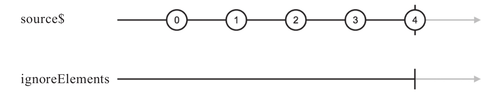

顾名思义，ignoreElments就是要忽略所有的元素，这里的元素是指上游产生的数据，忽略所有上游数据，只关心complete和error事件。下面是使用ignoreElements的示例代码：
const source$ = Observable.interval(1000).take(5); const result$ = source$.ignoreElements();
对应的弹珠图如图7-22所示。

图7-22 ignoreElements的弹珠图
在RxJS中，Observable中的数据是关键，只有对于不关心数据只关心Observable完结和出错的场景，ignoreElements才有意义，实话说这样的场景还真不多。
其实，ignoreElments完全可以用filter来实现，如下所示：
Observable.prototype.ignoreElements = function() {
return this.filter(x => false);
};
在将来的RxJS版本中，很可能ignoreElments也会像distinctKey一样被删除掉。